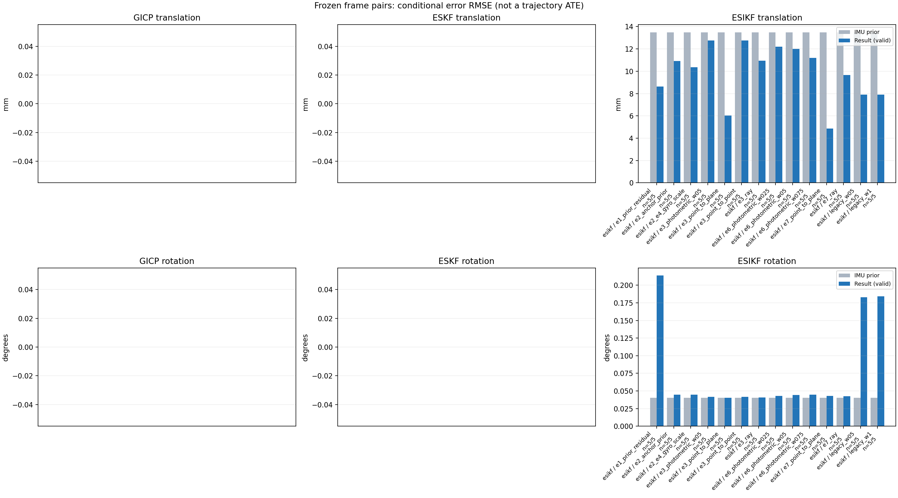

20261015_112659_forward · depth=disparity_cache · cache=eca29009b9a921082b6f
模型视差：/home/ubuntu22/slam/SIO_SLAM/models/tensorrt/disp_896x448_fp16.plan；engine SHA256=604cf6ac1f705c877260711730dd5d2d58c2a21f3020c03c668401ef7fb1e768。输入为生产裁剪与光照处理后的 RGB 0..255；此实验使用原始浮点像素视差，不应用完整前端的邻域视差后处理。
原始 ONNX SHA256：e9f49736a65d68d06681add463866b6defdf78fdd7f4f50f6cc941b682fdc0bc。
代价体图改写验证：ONNX Runtime 固定随机特征输入，最大绝对误差 0；该项检查图改写，完整模型精度仍需由录制数据评估。
配准代码版本：744ac2d993ae629b0cc44a3b1d995e04ab4fad48；观测生成版本：744ac2d993ae629b0cc44a3b1d995e04ab4fad48。
固定图像对与纯 IMU 先验；ESKF 回放固定 GICP 观测，ESIKF 直接读取点云。真值只用于此报告。
同时查看 converged 与 solver_status：上游默认 Stereo 在 max_iter / stopped_at_minimum 时也可能置 converged=true。valid 表示输入检查通过，不表示精度提升。欧氏 GICP 未提供独立的点距 RMSE，该列显示 NaN。
误差按每对图像的锚点计算，单位 m / degrees。此处 RMSE 不是全序列 ATE；末帧受同一锚点条件约束。NIS 与条件马氏距离是诊断量，少量相关图像对不能用于宣称协方差已校准。
全部指标 CSV · R / P 矩阵 CSV · Stereo 求解逐轮 CSV · ESIKF 逐轮轨迹 CSV · 末轮 H / R / K_pose 矩阵 CSV · 配置快照 · 矢量图
unflagged 排除纯惯性先验平移误差超过 50 mm 的图像对；whitened 为误差按协方差白化后的每自由度均值，协方差与实际误差相符时约为 1。
| stage | method | variant | valid | total | result_translation_rmse_m | result_rotation_rmse_deg | result_translation_median_m | result_rotation_median_deg | result_translation_rmse_unflagged_m | result_rotation_rmse_unflagged_deg | improved_translation | improved_rotation | posterior_whitened_by_P_rot_mean | posterior_whitened_by_P_trans_mean |
|---|---|---|---|---|---|---|---|---|---|---|---|---|---|---|
| esikf | esikf | e1_prior_residual | 5 | 5 | 0.0086395 | 0.21376 | 0.0082106 | 0.21681 | 0.0086395 | 0.21376 | 2 | 0 | 126.04 | 79.867 |
| esikf | esikf | e2_anchor_prior | 5 | 5 | 0.010909 | 0.044819 | 0.005089 | 0.010863 | 0.010909 | 0.044819 | 2 | 4 | 168.14 | 143.19 |
| esikf | esikf | e2_e4_gyro_scale | 5 | 5 | 0.010357 | 0.044748 | 0.0050806 | 0.016122 | 0.010357 | 0.044748 | 2 | 3 | 140.29 | 135.33 |
| esikf | esikf | e3_photometric_w05 | 5 | 5 | 0.012751 | 0.041398 | 0.0043953 | 0.0097008 | 0.012751 | 0.041398 | 4 | 4 | 89.767 | 5.3808 |
| esikf | esikf | e3_point_to_plane | 5 | 5 | 0.0060343 | 0.040266 | 0.004163 | 0.01012 | 0.0060343 | 0.040266 | 4 | 3 | 82.653 | 2.4296 |
| esikf | esikf | e3_point_to_point | 5 | 5 | 0.01276 | 0.041407 | 0.0043951 | 0.0096976 | 0.01276 | 0.041407 | 4 | 4 | 89.789 | 5.3774 |
| esikf | esikf | e3_ray | 5 | 5 | 0.010932 | 0.04054 | 0.004331 | 0.011322 | 0.010932 | 0.04054 | 4 | 1 | 76.367 | 3.0635 |
| esikf | esikf | e6_photometric_w025 | 5 | 5 | 0.012206 | 0.042948 | 0.0042538 | 0.0077624 | 0.012206 | 0.042948 | 4 | 4 | 109.27 | 38.876 |
| esikf | esikf | e6_photometric_w05 | 5 | 5 | 0.01201 | 0.044175 | 0.0046081 | 0.012242 | 0.01201 | 0.044175 | 2 | 3 | 121.95 | 74.899 |
| esikf | esikf | e6_photometric_w075 | 5 | 5 | 0.011197 | 0.044664 | 0.004892 | 0.015195 | 0.011197 | 0.044664 | 2 | 3 | 131.72 | 107.31 |
| esikf | esikf | e7_point_to_plane | 5 | 5 | 0.0048776 | 0.042841 | 0.004265 | 0.024983 | 0.0048776 | 0.042841 | 2 | 3 | 102.2 | 14.505 |
| esikf | esikf | e7_ray | 5 | 5 | 0.0096639 | 0.04248 | 0.0043066 | 0.011273 | 0.0096639 | 0.04248 | 3 | 2 | 105.96 | 24.531 |
| esikf | esikf | legacy_w05 | 5 | 5 | 0.0079111 | 0.18272 | 0.0063642 | 0.15526 | 0.0079111 | 0.18272 | 2 | 0 | 54.213 | 33.463 |
| esikf | esikf | legacy_w1 | 5 | 5 | 0.0079174 | 0.18425 | 0.0064289 | 0.15603 | 0.0079174 | 0.18425 | 2 | 0 | 108.83 | 66.836 |

| stage | case | method | variant | status | solver_status | inliers | converged | covariance_convention | covariance_from_hessian | fitness | registration_rmse_m | prior_trans_error_m | result_trans_error_m | prior_rot_error_deg | result_rot_error_deg | prior_flagged | R_rot_trace_rad2 | R_pos_trace_m2 | nis_regularized | posterior_whitened_by_P_rot | posterior_whitened_by_P_trans |
|---|---|---|---|---|---|---|---|---|---|---|---|---|---|---|---|---|---|---|---|---|---|
| esikf | static_start | esikf | legacy_w1 | updated | converged | 17236 | 1 | 1 | 0 | 0 | 9.0452e-05 | 0.0043748 | 0.0025908 | 0.060033 | 0 | 1.0897e-07 | 8.667e-07 | nan | 8.776 | 24.268 | |
| esikf | static_start | esikf | legacy_w05 | updated | converged | 17237 | 1 | 1 | 0 | 0 | 9.0452e-05 | 0.0043636 | 0.0025908 | 0.059234 | 0 | 2.1787e-07 | 1.733e-06 | nan | 4.2031 | 12.259 | |
| esikf | static_start | esikf | e1_prior_residual | updated_not_converged | max_iterations | 17277 | 0 | 1 | 0 | 0 | 9.0452e-05 | 0.0057511 | 0.0025908 | 0.077141 | 0 | 1.0908e-07 | 8.6722e-07 | nan | 12.462 | 40.814 | |
| esikf | static_start | esikf | e2_anchor_prior | updated | converged | 17220 | 1 | 1 | 0 | 0 | 9.0452e-05 | 0.00072135 | 0.0025908 | 0.0025414 | 0 | 1.0914e-07 | 8.6611e-07 | nan | 2.4645 | 3.3091 | |
| esikf | static_start | esikf | e2_e4_gyro_scale | updated | converged | 17220 | 1 | 1 | 0 | 0 | 9.0452e-05 | 0.00072135 | 0.0025908 | 0.0025413 | 0 | 1.0914e-07 | 8.6611e-07 | nan | 2.46 | 3.309 | |
| esikf | static_start | esikf | e6_photometric_w075 | updated | converged | 17220 | 1 | 1 | 0 | 0 | 9.0452e-05 | 0.00058352 | 0.0025908 | 0.0025488 | 0 | 1.4558e-07 | 1.1564e-06 | nan | 2.4578 | 2.0126 | |
| esikf | static_start | esikf | e6_photometric_w05 | updated | converged | 17220 | 1 | 1 | 0 | 0 | 9.0452e-05 | 0.00043796 | 0.0025908 | 0.002561 | 0 | 2.1836e-07 | 1.7352e-06 | nan | 2.4707 | 1.0171 | |
| esikf | static_start | esikf | e6_photometric_w025 | updated | converged | 17220 | 1 | 1 | 0 | 0 | 9.0452e-05 | 0.00027679 | 0.0025908 | 0.0025766 | 0 | 4.3628e-07 | 3.4645e-06 | nan | 2.494 | 0.35806 | |
| esikf | static_start | esikf | e7_ray | updated | converged | 17220 | 1 | 1 | 0 | 0 | 9.0452e-05 | 0.00081887 | 0.0025908 | 0.0026082 | 0 | 0.0093592 | 1.272e-05 | nan | 2.5552 | 3.1082 | |
| esikf | static_start | esikf | e7_point_to_plane | updated | converged | 17220 | 1 | 1 | 0 | 0 | 9.0452e-05 | 0.00040537 | 0.0025908 | 0.0024941 | 0 | 7.6402e-07 | 3.4093e-06 | nan | 2.3856 | 0.74695 | |
| esikf | static_start | esikf | e3_point_to_point | updated | converged | 17220 | 1 | 1 | 0 | 0 | 9.0452e-05 | 0.00010113 | 0.0025908 | 0.0025896 | 0 | 5.9767e-06 | 5.1259e-05 | nan | 2.5239 | 0.04031 | |
| esikf | static_start | esikf | e3_photometric_w05 | updated | converged | 17220 | 1 | 1 | 0 | 0 | 9.0452e-05 | 0.00010107 | 0.0025908 | 0.0025896 | 0 | 5.9732e-06 | 5.1339e-05 | nan | 2.5239 | 0.040265 | |
| esikf | static_start | esikf | e3_ray | updated | converged | 17220 | 1 | 1 | 0 | 0 | 9.0452e-05 | 9.7939e-05 | 0.0025908 | 0.002591 | 0 | 0.84185 | 0.0011253 | nan | 2.5272 | 0.03727 | |
| esikf | static_start | esikf | e3_point_to_plane | updated | converged | 17220 | 1 | 1 | 0 | 0 | 9.0452e-05 | 9.7827e-05 | 0.0025908 | 0.0025887 | 0 | 3.7603e-05 | 0.00010241 | nan | 2.5228 | 0.037376 | |
| esikf | sync_motion | esikf | legacy_w1 | updated | converged | 16308 | 1 | 1 | 0 | 0 | 0.0013397 | 0.01217 | 0.011322 | 0.15603 | 0 | 1.1284e-07 | 8.9963e-07 | nan | 95.297 | 174.84 | |
| esikf | sync_motion | esikf | legacy_w05 | updated | converged | 16303 | 1 | 1 | 0 | 0 | 0.0013397 | 0.012173 | 0.011322 | 0.15526 | 0 | 2.2561e-07 | 1.7984e-06 | nan | 47.73 | 87.868 | |
| esikf | sync_motion | esikf | e1_prior_residual | updated_not_converged | max_iterations | 16292 | 0 | 1 | 0 | 0 | 0.0013397 | 0.012567 | 0.011322 | 0.15692 | 0 | 1.1295e-07 | 9.0529e-07 | nan | 100.72 | 185.54 | |
| esikf | sync_motion | esikf | e2_anchor_prior | updated | converged | 16220 | 1 | 1 | 0 | 0 | 0.0013397 | 0.0021711 | 0.011322 | 0.010863 | 0 | 1.1417e-07 | 9.2678e-07 | nan | 45.138 | 33.244 | |
| esikf | sync_motion | esikf | e2_e4_gyro_scale | updated | converged | 16200 | 1 | 1 | 0 | 0 | 0.0013397 | 0.0020548 | 0.011322 | 0.016122 | 0 | 1.1429e-07 | 9.2875e-07 | nan | 3.0264 | 17.181 | |
| esikf | sync_motion | esikf | e6_photometric_w075 | updated | converged | 16207 | 1 | 1 | 0 | 0 | 0.0013397 | 0.0018135 | 0.011322 | 0.015195 | 0 | 1.5246e-07 | 1.241e-06 | nan | 1.9015 | 11.739 | |
| esikf | sync_motion | esikf | e6_photometric_w05 | updated | converged | 16226 | 1 | 1 | 0 | 0 | 0.0013397 | 0.001522 | 0.011322 | 0.012242 | 0 | 2.2799e-07 | 1.8481e-06 | nan | 0.82979 | 6.9415 | |
| esikf | sync_motion | esikf | e6_photometric_w025 | updated | converged | 16234 | 1 | 1 | 0 | 0 | 0.0013397 | 0.001318 | 0.011322 | 0.0077624 | 0 | 4.5461e-07 | 3.6811e-06 | nan | 0.2414 | 4.0047 | |
| esikf | sync_motion | esikf | e7_ray | updated | converged | 16230 | 1 | 1 | 0 | 0 | 0.0013397 | 0.0010114 | 0.011322 | 0.011273 | 0 | 0.0065227 | 1.1051e-05 | nan | 0.38272 | 2.5786 | |
| esikf | sync_motion | esikf | e7_point_to_plane | updated | converged | 16228 | 1 | 1 | 0 | 0 | 0.0013397 | 0.0015971 | 0.011322 | 0.024983 | 0 | 7.8386e-07 | 3.6052e-06 | nan | 2.859 | 7.0476 | |
| esikf | sync_motion | esikf | e3_point_to_point | updated | converged | 16242 | 1 | 1 | 0 | 0 | 0.0013397 | 0.0013212 | 0.011322 | 0.0096976 | 0 | 6.2204e-06 | 5.4556e-05 | nan | 0.31698 | 3.1293 | |
| esikf | sync_motion | esikf | e3_photometric_w05 | updated | converged | 16242 | 1 | 1 | 0 | 0 | 0.0013397 | 0.0013212 | 0.011322 | 0.0097008 | 0 | 6.2171e-06 | 5.4639e-05 | nan | 0.31723 | 3.1292 | |
| esikf | sync_motion | esikf | e3_ray | updated | converged | 16242 | 1 | 1 | 0 | 0 | 0.0013397 | 0.0013311 | 0.011322 | 0.011322 | 0 | 0.57586 | 0.00096906 | nan | 0.38606 | 3.1498 | |
| esikf | sync_motion | esikf | e3_point_to_plane | updated | converged | 16242 | 1 | 1 | 0 | 0 | 0.0013397 | 0.0013271 | 0.011322 | 0.01012 | 0 | 3.8356e-05 | 0.00010807 | nan | 0.31098 | 3.1502 | |
| esikf | main_motion | esikf | legacy_w1 | updated | converged | 17248 | 1 | 1 | 0 | 0 | 0.0045997 | 0.0064289 | 0.029347 | 0.12194 | 0 | 9.7575e-08 | 9.8846e-07 | nan | 39.55 | 45.47 | |
| esikf | main_motion | esikf | legacy_w05 | updated | converged | 17250 | 1 | 1 | 0 | 0 | 0.0045997 | 0.0063642 | 0.029347 | 0.12093 | 0 | 1.9508e-07 | 1.9758e-06 | nan | 19.505 | 22.323 | |
| esikf | main_motion | esikf | e1_prior_residual | updated_not_converged | max_iterations | 17228 | 0 | 1 | 0 | 0 | 0.0045997 | 0.0082106 | 0.029347 | 0.21681 | 0 | 9.841e-08 | 9.9737e-07 | nan | 103.82 | 74.241 | |
| esikf | main_motion | esikf | e2_anchor_prior | updated_not_converged | max_iterations | 17238 | 0 | 1 | 0 | 0 | 0.0045997 | 0.005089 | 0.029347 | 0.029139 | 0 | 9.9181e-08 | 1.0167e-06 | nan | 319.5 | 113.27 | |
| esikf | main_motion | esikf | e2_e4_gyro_scale | updated_not_converged | max_iterations | 17240 | 0 | 1 | 0 | 0 | 0.0045997 | 0.0050806 | 0.029347 | 0.029081 | 0 | 9.9102e-08 | 1.0152e-06 | nan | 265.19 | 112.07 | |
| esikf | main_motion | esikf | e6_photometric_w075 | updated_not_converged | max_iterations | 17243 | 0 | 1 | 0 | 0 | 0.0045997 | 0.004892 | 0.029347 | 0.029076 | 0 | 1.322e-07 | 1.354e-06 | nan | 260.25 | 80.707 | |
| esikf | main_motion | esikf | e6_photometric_w05 | updated | converged | 17244 | 1 | 1 | 0 | 0 | 0.0045997 | 0.0046081 | 0.029347 | 0.029078 | 0 | 1.9853e-07 | 2.0406e-06 | nan | 253.51 | 49.869 | |
| esikf | main_motion | esikf | e6_photometric_w025 | updated | converged | 17250 | 1 | 1 | 0 | 0 | 0.0045997 | 0.0042538 | 0.029347 | 0.02904 | 0 | 3.951e-07 | 4.0569e-06 | nan | 241.2 | 21.419 | |
| esikf | main_motion | esikf | e7_ray | updated | converged | 17203 | 1 | 1 | 0 | 0 | 0.0045997 | 0.0043066 | 0.029347 | 0.030529 | 0 | 0.0062408 | 1.2362e-05 | nan | 271.16 | 10.815 | |
| esikf | main_motion | esikf | e7_point_to_plane | updated | converged | 17240 | 1 | 1 | 0 | 0 | 0.0045997 | 0.0049291 | 0.029347 | 0.02929 | 0 | 7.2136e-07 | 3.8403e-06 | nan | 251.02 | 24.468 | |
| esikf | main_motion | esikf | e3_point_to_point | updated | converged | 17267 | 1 | 1 | 0 | 0 | 0.0045997 | 0.0043951 | 0.029347 | 0.029312 | 0 | 5.4493e-06 | 6.0725e-05 | nan | 212.48 | 4.8426 | |
| esikf | main_motion | esikf | e3_photometric_w05 | updated | converged | 17267 | 1 | 1 | 0 | 0 | 0.0045997 | 0.0043953 | 0.029347 | 0.029312 | 0 | 5.4461e-06 | 6.0824e-05 | nan | 212.47 | 4.8413 | |
| esikf | main_motion | esikf | e3_ray | updated | converged | 17270 | 1 | 1 | 0 | 0 | 0.0045997 | 0.004331 | 0.029347 | 0.029434 | 0 | 0.53769 | 0.0011136 | nan | 210.33 | 4.0344 | |
| esikf | main_motion | esikf | e3_point_to_plane | updated | converged | 17267 | 1 | 1 | 0 | 0 | 0.0045997 | 0.004163 | 0.029347 | 0.029415 | 0 | 3.6498e-05 | 0.00011884 | nan | 213.19 | 4.1127 | |
| esikf | main_motion_long | esikf | legacy_w1 | updated_not_converged | max_iterations | 15504 | 0 | 1 | 0 | 0 | 0.028091 | 0.0085066 | 0.084242 | 0.23324 | 0 | 1.2503e-07 | 1.2059e-06 | nan | 299.41 | 62.582 | |
| esikf | main_motion_long | esikf | legacy_w05 | updated_not_converged | max_iterations | 15516 | 0 | 1 | 0 | 0 | 0.028091 | 0.0085126 | 0.084242 | 0.23126 | 0 | 2.4943e-07 | 2.4102e-06 | nan | 149.73 | 31.255 | |
| esikf | main_motion_long | esikf | e1_prior_residual | updated_not_converged | max_iterations | 15515 | 0 | 1 | 0 | 0 | 0.028091 | 0.0085987 | 0.084242 | 0.22647 | 0 | 1.248e-07 | 1.2056e-06 | nan | 292.75 | 63.623 | |
| esikf | main_motion_long | esikf | e2_anchor_prior | updated_not_converged | max_iterations | 15558 | 0 | 1 | 0 | 0 | 0.028091 | 0.022358 | 0.084242 | 0.095177 | 0 | 1.3809e-07 | 1.4665e-06 | nan | 469.12 | 410.7 | |
| esikf | main_motion_long | esikf | e2_e4_gyro_scale | updated_not_converged | max_iterations | 15563 | 0 | 1 | 0 | 0 | 0.028091 | 0.021019 | 0.084242 | 0.094279 | 0 | 1.3557e-07 | 1.422e-06 | nan | 426.34 | 388.65 | |
| esikf | main_motion_long | esikf | e6_photometric_w075 | updated_not_converged | max_iterations | 15551 | 0 | 1 | 0 | 0 | 0.028091 | 0.023139 | 0.084242 | 0.094234 | 0 | 1.8618e-07 | 1.9943e-06 | nan | 389.47 | 325.46 | |
| esikf | main_motion_long | esikf | e6_photometric_w05 | updated_not_converged | max_iterations | 15546 | 0 | 1 | 0 | 0 | 0.028091 | 0.025168 | 0.084242 | 0.093506 | 0 | 2.9027e-07 | 3.2111e-06 | nan | 348.35 | 238.3 | |
| esikf | main_motion_long | esikf | e6_photometric_w025 | updated_not_converged | max_iterations | 15549 | 0 | 1 | 0 | 0 | 0.028091 | 0.025727 | 0.084242 | 0.091106 | 0 | 5.8046e-07 | 6.4033e-06 | nan | 297.69 | 130.69 | |
| esikf | main_motion_long | esikf | e7_ray | updated_not_converged | max_iterations | 15556 | 0 | 1 | 0 | 0 | 0.028091 | 0.012557 | 0.084242 | 0.089119 | 0 | 0.0058809 | 4.0071e-05 | nan | 250 | 36.797 | |
| esikf | main_motion_long | esikf | e7_point_to_plane | updated_not_converged | max_iterations | 15514 | 0 | 1 | 0 | 0 | 0.028091 | 0.004265 | 0.084242 | 0.087614 | 0 | 9.852e-07 | 4.9176e-06 | nan | 250.03 | 9.5571 | |
| esikf | main_motion_long | esikf | e3_point_to_point | updated_not_converged | max_iterations | 15609 | 0 | 1 | 0 | 0 | 0.028091 | 0.026837 | 0.084242 | 0.087164 | 0 | 7.8745e-06 | 9.3544e-05 | nan | 228.15 | 15.451 | |
| esikf | main_motion_long | esikf | e3_photometric_w05 | updated_not_converged | max_iterations | 15608 | 0 | 1 | 0 | 0 | 0.028091 | 0.026807 | 0.084242 | 0.087144 | 0 | 7.8624e-06 | 9.3523e-05 | nan | 228.04 | 15.451 | |
| esikf | main_motion_long | esikf | e3_ray | updated | converged | 15658 | 1 | 1 | 0 | 0 | 0.028091 | 0.022377 | 0.084242 | 0.084858 | 0 | 0.43911 | 0.0028686 | nan | 163.12 | 5.7117 | |
| esikf | main_motion_long | esikf | e3_point_to_plane | updated_not_converged | max_iterations | 15603 | 0 | 1 | 0 | 0 | 0.028091 | 0.010858 | 0.084242 | 0.08437 | 0 | 4.7953e-05 | 0.00014618 | nan | 192.09 | 2.9349 | |
| esikf | static_end | esikf | legacy_w1 | updated | converged | 12314 | 1 | 1 | 0 | 0 | 0.0099324 | 0.0056997 | 0.0040144 | 0.26929 | 0 | 2.1033e-07 | 1.2887e-06 | nan | 101.14 | 27.02 | |
| esikf | static_end | esikf | legacy_w05 | updated | converged | 12314 | 1 | 1 | 0 | 0 | 0.0099324 | 0.0057219 | 0.0040144 | 0.26685 | 0 | 4.2089e-07 | 2.5812e-06 | nan | 49.901 | 13.607 | |
| esikf | static_end | esikf | e1_prior_residual | updated_not_converged | max_iterations | 12346 | 0 | 1 | 0 | 0 | 0.0099324 | 0.0063909 | 0.0040144 | 0.31558 | 0 | 2.0902e-07 | 1.2743e-06 | nan | 120.44 | 35.115 | |
| esikf | static_end | esikf | e2_anchor_prior | updated | converged | 12192 | 1 | 1 | 0 | 0 | 0.0099324 | 0.0080011 | 0.0040144 | 0.0033861 | 0 | 2.1491e-07 | 1.3172e-06 | nan | 4.4839 | 155.42 | |
| esikf | static_end | esikf | e2_e4_gyro_scale | updated | converged | 12192 | 1 | 1 | 0 | 0 | 0.0099324 | 0.0080011 | 0.0040144 | 0.0033857 | 0 | 2.1491e-07 | 1.3172e-06 | nan | 4.4652 | 155.42 | |
| esikf | static_end | esikf | e6_photometric_w075 | updated | converged | 12196 | 1 | 1 | 0 | 0 | 0.0099324 | 0.0079926 | 0.0040144 | 0.0034134 | 0 | 2.8659e-07 | 1.7568e-06 | nan | 4.5274 | 116.61 | |
| esikf | static_end | esikf | e6_photometric_w05 | updated | converged | 12193 | 1 | 1 | 0 | 0 | 0.0099324 | 0.0079978 | 0.0040144 | 0.0034483 | 0 | 4.2951e-07 | 2.6308e-06 | nan | 4.6032 | 78.368 | |
| esikf | static_end | esikf | e6_photometric_w025 | updated_not_converged | max_iterations | 12207 | 0 | 1 | 0 | 0 | 0.0099324 | 0.0079475 | 0.0040144 | 0.0035018 | 0 | 8.6573e-07 | 5.3638e-06 | nan | 4.7149 | 37.911 | |
| esikf | static_end | esikf | e7_ray | updated_not_converged | max_iterations | 12300 | 0 | 1 | 0 | 0 | 0.0099324 | 0.017001 | 0.0040144 | 0.0038481 | 0 | 0.0092955 | 9.0927e-06 | nan | 5.6745 | 69.354 | |
| esikf | static_end | esikf | e7_point_to_plane | updated | converged | 12211 | 1 | 1 | 0 | 0 | 0.0099324 | 0.0085881 | 0.0040144 | 0.0034917 | 0 | 1.144e-06 | 4.6013e-06 | nan | 4.6921 | 30.704 | |
| esikf | static_end | esikf | e3_point_to_point | updated | converged | 12220 | 1 | 1 | 0 | 0 | 0.0099324 | 0.0085303 | 0.0040144 | 0.0038825 | 0 | 1.2385e-05 | 8.6328e-05 | nan | 5.4757 | 3.4238 | |
| esikf | static_end | esikf | e3_photometric_w05 | updated | converged | 12216 | 1 | 1 | 0 | 0 | 0.0099324 | 0.0085616 | 0.0040144 | 0.0038837 | 0 | 1.2388e-05 | 8.6502e-05 | nan | 5.4788 | 3.4428 | |
| esikf | static_end | esikf | e3_ray | updated | converged | 12235 | 1 | 1 | 0 | 0 | 0.0099324 | 0.0087325 | 0.0040144 | 0.0039192 | 0 | 0.91162 | 0.0013138 | nan | 5.4685 | 2.3843 | |
| esikf | static_end | esikf | e3_point_to_plane | updated | converged | 12174 | 1 | 1 | 0 | 0 | 0.0099324 | 0.0067123 | 0.0040144 | 0.0037512 | 0 | 6.0508e-05 | 0.00015932 | nan | 5.1502 | 1.913 |